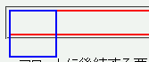
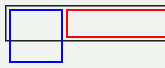

フロートに後続する要素に幅か高さが指定されているとき、その要素の幅はフロートの幅を確保するように短縮される。また、フロートと後続要素の間に無くすことができない隙間ができる。
<div style="float:left; width:50px; height:50px; border:2px solid blue;"></div> <div style="height:25px; border:2px solid red;"></div>
フロートに後続する要素のボックスは左端がフロートの陰になります。
Mozilla1.0標準モード
WinIE6.0標準モード
この不具合のために幅が短縮された要素の内部にあるフロートでは、その要素の外部にあるフロートに対してclearプロパティが効きません。以下の例で背景が空色のフロートは青色ボーダーのフロートの下に置かれるはずですが、WinIEでは赤色ボーダーのボックスの内容領域の左上端、つまり青色ボーダーのフロートの右に置かれます。
<div style="float:left; width:3em; height:3em; border:2px solid blue;"></div> <div style="height:1.5em; border:2px solid red;"> <div style="float:left; clear:left; width:5em; background:aqua;">フロート</div> </div>
WinIE6.0の標準モードと互換モードで不具合の発生を確認しました。